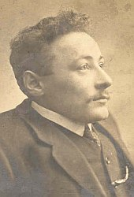

San Antonio, Texas, USA.
Lé 7 dé janvyi, 1984.
Nouos v'là en mil neu chent huiptante quatre! Ch'est încriyab'ye comme les années lus en vont. Jé n'criyais janmais d'vaie chettechîn, mais j'sis content qué j'm'étais trompé!
Ieune des choses tch'êcliaithent ma vieillèche en exil est l'arrivée d'la "Jersey Weekly Post" et j'veins d'ècherver la cheinne du 22 d'dézembre tchi veint dé s'pâsser. Oulle est bein întérêssante.
J'n'ai pon adopté l'habitude d'êcrithe entouôrre chein tchi s'pâsse dans l's Êtats viyant qué j'sis trop liain d'l'Île pour saver l'pour et l'contre des dêbats. Mais ches deux mots-là, "pour" et "contre", ont un caractéthe historique viyant qu'en temps d'êlections, quand j'tais mousse, i' fallîsse tch'i' fûssent connus par tchoeu par les candidats d'pâraisses pour l'office împortante dé Député ès Êtats. Ch'tait les deux seuls mots (à tchique exception) tch'étaient l'c'menchement et la fin d'lus discours dans la Chambre Législative!
Eune chose tchi m'êtonnait en liêsant chutte gâzette 'tait tch'i' y'avait opposition à l'adoption d'l'ûsage des cheintuthes dé seûtheté en moto. I' n'y'a autchun doute qué des milles vies ont 'té sauvées dans l's accidents par l'ûsage dé ches cheintuthes. Ch'est vrai, sans doute, qué dans cèrtains cas, bein isolés, la cheintuthe s'est prouvée niêsibl'ye. Mais ches cas-là sont rares à compather ès grands nombres d'vies sauvées par l'ûsage dé chutte cheintuthe.
I' y'a tréjous tchitch'un tch'est contre un projet d'vant l's Êtats viyant qué nou n'dait pon êt' forchis d'faithe autcheune chose, car l'îndividu a l'drouait d'faithe san chouaix. Mais combein d'libèrté dé l'faithe qué la pèrsonne d'au jour d'aniet a rêellement? J'sommes forchis d'obéi la louai, d'accepter les vouaix d'la majorité en dêbat d'assembliée parouîssiale et d's Êtats. J'sommes forchis d'payi lé rât d'pâraisse et un pourchentage dé nouot' èrvénu à nouot' gouvèrnément. L'homme est forchi d'obéi à sa bouannefemme pour vivre en parfait êtat conjugal, et ch'là ouaithe qué ch'est la femme, dans l'sèrvice dé mathiage dans la Litourgie, tchi promet d'obéi à s'n homme! Et j'sommes forchis d'pâler en Angliais à un tas d'gens tchi n'savent pon l'Jèrriais. Et d'chârer les routes publyiques en auto auve des ivrouangnes motoristes tchi m'nichent la vie d'autrui. Mais èrvénons à la gâzette.
| 
|
Ch'tait à l'occasion d'la préchaine visite à Ph'lippe en Jèrri qué sa soeu Eva s'en fut a Vancouver acanté li. J'm'èrsouveins tout à fait bein d'lyi, et j'avions êchangi d'cartes d'Noué pour bein d's années.
Et j' 'tais content d'vaie l'bieau portrait dé Messire Frank Ereaut, nouot' fanmeux Bailli, et sé l'vaie si bein r'mîns dé s'n opéthâtion. Il orne le siège judiciaithe et législatif du bailliage dé Jèrri auve charme et dîngnité, et j'lî souhaite, bein respectueusement, bouanne année et bouanne santé.
Lé p'tit mio entouôrre la visite dé la Reine Victoria et s'n êchange dé présents auve lé Sieur Ph'lippe Pinel, mé ramémouaithe eune séthée à Gaspé à La Côte. J'tions à l'Hôtel Rouoyale, les Sieurs John et Morris Le Cocq et deux-s'trais aut. Jèrriais et mé, et j'tions à bailli d'nouot' becque entouôrre Jèrri. Étant St Ouënnais, j'tais à loûser St Ouën comme étant la pus fanmeuse des pâraisses dé l'Île. "St. Ouën?" s'fît John Le Cocq. "Tchi niolîn! St Martîn a produit un rouai - lé Rouai des Ecréhos - et St Ouën n'a produit qu'des Gris Ventres!"
Viyiz étout: